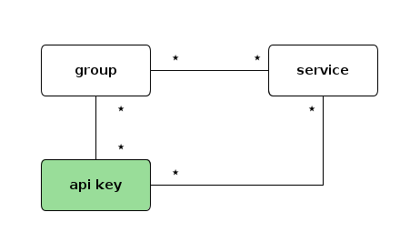

API Keys
An API key is a unique credential used to authenticate and authorize calls to routes and APIs.

You can find a practical example here.
UI page
You can find all API keys here
Properties
| Property | Type | Default | Description |
|---|---|---|---|
clientId |
string | Unique random identifier for this API key | |
clientSecret |
string | Random secret used to validate the API key | |
clientName |
string | Display name of the API key (used for debugging) | |
description |
string | "" |
Description of the API key |
authorizedEntities |
array of string | Groups, routes, services, and APIs this key is authorized on | |
enabled |
boolean | true |
Whether the API key is active. Disabled keys reject all calls |
readOnly |
boolean | false |
If enabled, only GET, HEAD, and OPTIONS methods are allowed |
allowClientIdOnly |
boolean | false |
Allow clients to authenticate with only the client ID (in a specific header), without the secret |
constrainedServicesOnly |
boolean | false |
This API key can only be used on services with API key routing constraints |
validUntil |
number | null |
Auto-disable the API key after this timestamp (milliseconds). Once expired, the key is disabled |
tags |
array of string | [] |
Tags for categorization |
metadata |
object | {} |
Key/value metadata |
Quotas
Quotas control the rate of API calls allowed for this key.
| Property | Type | Default | Description |
|---|---|---|---|
throttlingQuota |
number | unlimited | Maximum number of calls per second |
dailyQuota |
number | unlimited | Maximum number of calls per day |
monthlyQuota |
number | unlimited | Maximum number of calls per month |
Warning
Daily and monthly quotas are computed as follows:
- Daily quota: between 00:00:00.000 and 23:59:59.999 of the current day
- Monthly quota: between the first day at 00:00:00.000 and the last day at 23:59:59.999 of the current month
Quota consumption
The current consumption can be checked on the API key detail page or via the admin API:
| Property | Description |
|---|---|
currentCallsPerDay |
Number of calls consumed today |
remainingCallsPerDay |
Remaining calls for today |
currentCallsPerMonth |
Number of calls consumed this month |
remainingCallsPerMonth |
Remaining calls for this month |
Automatic secret rotation
API keys can handle automatic secret rotation. When enabled, the secret is changed periodically. During the grace period, both the old and new secrets are valid.
| Property | Type | Default | Description |
|---|---|---|---|
enabled |
boolean | false |
Enable automatic rotation |
rotationEvery |
number | 744 |
Rotate the secret every N hours |
gracePeriod |
number | 168 |
Period (hours) during which both old and new secrets are accepted |
Restrictions
Restrictions allow fine-grained access control based on request path and method.
| Property | Type | Default | Description |
|---|---|---|---|
enabled |
boolean | false |
Enable restrictions |
allowLast |
boolean | false |
Test forbidden and not-found paths before allowed paths |
allowed |
array of object | [] |
Allowed paths (method + path pairs) |
forbidden |
array of object | [] |
Forbidden paths |
notFound |
array of object | [] |
Paths that return 404 |
Call examples
Once an API key is created, you can call protected routes using one of these methods:
Using headers
curl -H "Otoroshi-Client-Id: <clientId>" \
-H "Otoroshi-Client-Secret: <clientSecret>" \
https://api.oto.tools/users
Using Basic authentication
curl -H "Authorization: Basic <base64(clientId:clientSecret)>" \
https://api.oto.tools/users
Using client ID only (if allowClientIdOnly is enabled)
curl -H "Otoroshi-Client-Id: <clientId>" \
https://api.oto.tools/users
JSON example
{
"clientId": "abcdef123456",
"clientSecret": "secret_xyz789",
"clientName": "My API Key",
"description": "Key for the payment service",
"authorizedEntities": ["group_payment_apis", "route_checkout"],
"enabled": true,
"readOnly": false,
"allowClientIdOnly": false,
"constrainedServicesOnly": false,
"validUntil": null,
"throttlingQuota": 100,
"dailyQuota": 10000,
"monthlyQuota": 300000,
"restrictions": {
"enabled": false,
"allowLast": false,
"allowed": [],
"forbidden": [],
"notFound": []
},
"rotation": {
"enabled": false,
"rotationEvery": 744,
"gracePeriod": 168
},
"tags": ["payment"],
"metadata": {
"team": "billing"
}
}
Admin API
GET /api/apikeys # List all API keys
POST /api/apikeys # Create an API key
GET /api/apikeys/:id # Get an API key by clientId
PUT /api/apikeys/:id # Update an API key
DELETE /api/apikeys/:id # Delete an API key
PATCH /api/apikeys/:id # Partially update an API key
Additional endpoints:
GET /api/apikeys/:id/quotas # Get current quota consumption
PUT /api/apikeys/:id/quotas # Reset quotas
GET /api/groups/:groupId/apikeys # List API keys for a group
Related entities
- Service Groups - Groups that API keys can be authorized on
- Routes - Routes that API keys can be authorized on
- APIs - APIs where API keys are generated via subscriptions